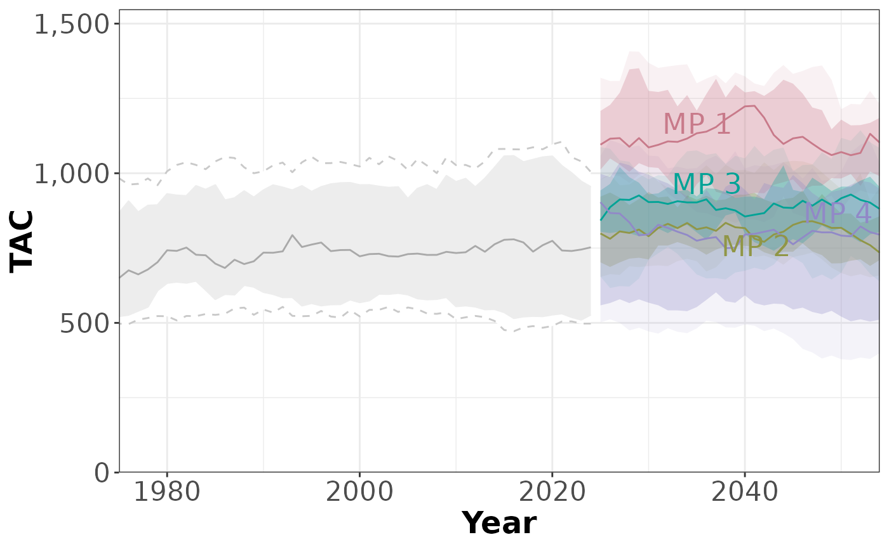
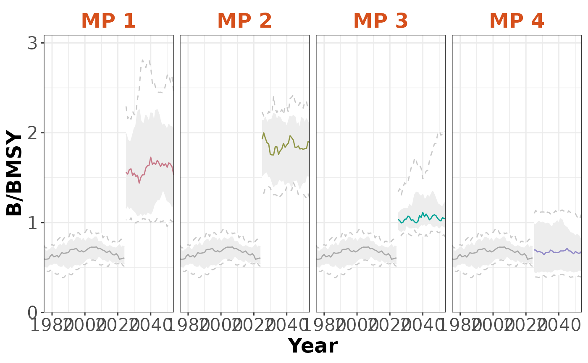
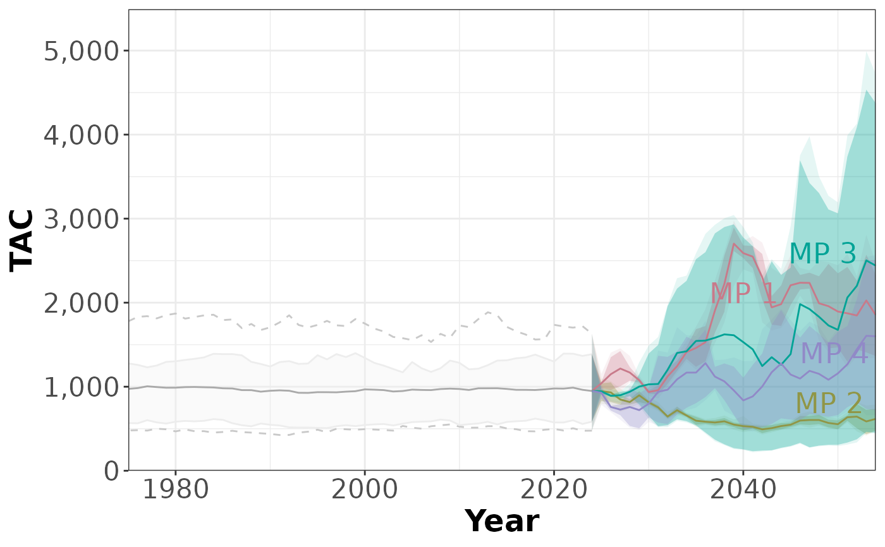

S4 class Timeseries
Timeseries-class.RdObjects of class Timeseries are used to store information for the Time Series plots.
Like all S4 objects in Slick, slots in this object can be accessed and
assigned using functions corresponding to slot name. See Timeseries() and the
the See Also section below.
Details
Objects of class Timeseries are created with Timeseries()
Slots
CodeA short code for the Performance Indicators for this object. A character string length
nPIor a named list for multi-language support. SeeDetailsLabelA short label for the Performance Indicators for this object. Used to label axes on charts. Can be longer than
Codebut recommended to keep short as possible so it shows clearly in plots and tables. A character string lengthnPIor a named list for multi-language support. SeeDetailsDescriptionA description for the Performance Indicators for this object. Can include Markdown, see
Examples. A character string lengthnPIor a named list for multi-language support. SeeDetailsTimeA numeric vector with values for the historical and projection time-steps. Must match length
nTSinValueTimeNowA numeric value matching the last historical timestep in
TimeTimeLabCharacter string length 1. Name of the time step (e.g., 'Year'). Will be used as the label in the plots. Use a named list for multiple languages.
ValueA numeric array with the stochastic performance indicator values for each simulation (sim), operating model (OM), management procedure (MP), performance indicator (PI), and historical + projection timestep (nTS). Dimensions: c(
nsim,nOM,nMP,nPI,nTS)PresetAn optional named list for the preset buttons in the
App(). The name of the list element will appear as a button in theApp().TargetNumeric vector length
nPIwith the target value for the PIs.LimitNumeric vector length
nPIwith the limit value for the PIs.
Examples
# Generate dummy values
nsim <- 10
nOM <- 2
nMP <- 4
nPI <- 3
nHistTS <- 50
nProjTS <- 30
nTS <- nHistTS + nProjTS
values <- array(NA, dim=c(nsim, nOM, nMP, nPI, nTS))
pi_means <- c(1,1, 1000)
for (om in 1:nOM) {
for (pi in 1:nPI) {
# PI identical for historical
histVals <- matrix(
pi_means[pi] *
cumprod(c(rlnorm(nHistTS*nsim, 0, 0.05))),
nrow=nsim, ncol=nHistTS, byrow=TRUE)
histVals <- replicate(nMP, histVals)
values[,om, , pi,1:nHistTS] <- aperm(histVals, c(1,3,2))
for (mp in 1:nMP) {
values[,om, mp, pi,(nHistTS+1):nTS] <- matrix(
pi_means[pi] *
cumprod(c(rlnorm(nProjTS*nsim, 0, 0.05))),
nrow=nsim, ncol=nProjTS, byrow=TRUE)
}
}
}
values[1,1,2,3,]
#> [1] 978.3651 1000.6896 1030.6394 984.2071 977.1655 892.5707 908.4395
#> [8] 933.3621 988.9709 1010.1399 1052.6372 1053.2636 1050.3835 1063.1665
#> [15] 1091.1926 1132.5424 1170.9664 1207.5278 1228.7919 1341.3697 1271.3535
#> [22] 1240.6661 1218.6573 1313.7667 1232.4267 1284.9759 1307.5016 1389.3802
#> [29] 1369.4759 1325.6650 1319.7614 1240.0906 1280.5285 1268.9966 1229.6764
#> [36] 1230.2001 1260.1701 1255.7175 1269.5099 1360.9379 1351.6135 1397.6831
#> [43] 1370.8386 1364.2199 1296.4647 1193.8135 1280.2745 1254.9792 1234.4941
#> [50] 1321.3912 971.4586 965.5172 870.9249 843.1506 896.1383 947.8783
#> [57] 887.1268 822.1023 815.1139 800.8623 811.0216 802.4481 759.7199
#> [64] 714.8168 740.3164 752.0718 695.1222 673.1143 675.0695 693.0405
#> [71] 687.8201 685.0688 622.6116 571.7847 539.0178 537.2317 570.4667
#> [78] 510.9442 524.1071 510.8670
values[2,1,2,3,]
#> [1] 1312.6513 1382.2046 1335.0990 1567.3962 1508.8342 1432.5605 1408.7465
#> [8] 1403.1502 1381.7184 1411.1521 1396.2539 1245.1835 1189.9268 1242.1004
#> [15] 1167.3787 1209.3686 1170.1193 1288.2994 1386.8074 1285.4600 1499.9180
#> [22] 1513.1577 1522.7843 1491.8950 1503.8030 1471.2842 1387.3575 1372.9229
#> [29] 1315.1837 1243.4661 1297.0238 1254.0260 1286.2661 1260.1419 1269.2337
#> [36] 1272.1107 1342.9572 1458.0289 1471.0589 1448.3604 1461.1317 1440.1945
#> [43] 1482.7153 1514.7537 1446.2233 1274.4383 1346.4663 1339.8852 1368.4540
#> [50] 1433.7236 473.6654 482.3297 498.2686 507.4888 553.4499 542.1197
#> [57] 479.6717 489.6317 453.7952 477.5302 474.0378 486.3821 465.6488
#> [64] 486.5204 447.0764 459.2832 462.2450 470.6791 440.1647 432.2422
#> [71] 433.9411 421.6759 389.5374 392.8488 383.3059 386.6479 413.2286
#> [78] 429.5478 416.5988 455.3647
# Create and populate Object
timeseries <- Timeseries(Code=c('B/BMSY', 'F/FMSY', 'TAC'),
Label=c('B/BMSY',
'F/FMSY',
'TAC'),
Description = c('This is the description for PI 1',
'This is the description for PI 2',
'This is the description for PI 3'),
Value=values
)
# Last historical time step
TimeNow(timeseries) <- 2024
# Add values for time steps
Time(timeseries) <- c(seq(TimeNow(timeseries), by=-1, length.out=nHistTS),
seq(TimeNow(timeseries)+1, by=1, length.out=nProjTS))
# Check
Check(timeseries)
#>
#> ── Checking: "Timeseries" ──
#>
#> ✔ Complete
# Add to `Slick` object
slick <- Slick()
Timeseries(slick) <- timeseries
# Plots
plotTimeseries(slick, 3)
#> ℹ Note: `MPs` is empty. Using default MP names and colors

plotTimeseries(slick, byMP=TRUE)
#> ℹ Note: `MPs` is empty. Using default MP names and colors

plotTimeseries(slick, byOM=TRUE)
#> ℹ Note: `MPs` is empty. Using default MP names and colors
